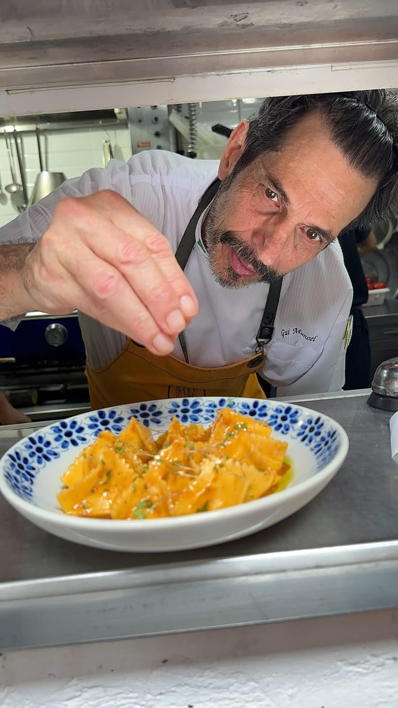
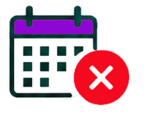
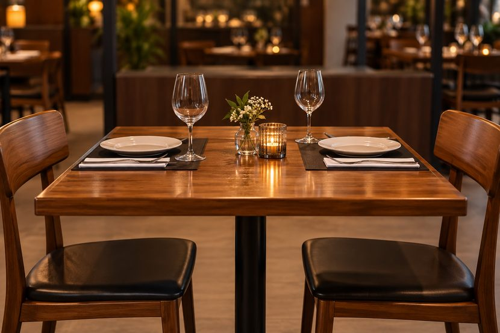

Reservou e não apareceu.E AGORA?
#75 out . 26
Por: Carol Belisse
Cobrar antecipadamente pode ajudar a evitar mesas vazias, mas definir uma boa política de reservas exige olhar para os números, avaliar alternativas e deixar as regras claras para o cliente
Uma mesa reservada fica à espera de um cliente que, às vezes, não aparece nem avisa que desistiu. É o no-show, situação que pode deixar o restaurante sem tempo para receber outra pessoa naquele lugar e horário.
Para tentar reduzir essas ausências, restaurantes têm adotado diferentes estratégias, de confirmações e lembretes à cobrança de valores antecipados. Antes de escolher uma delas, porém, é preciso entender o tamanho do problema dentro do próprio negócio.
O primeiro passo é acompanhar as reservas para identificar se as ausências são recorrentes ou se estão concentradas em determinadas situações. Dia da semana, horário, tamanho do grupo e antecedência da reserva são algumas informações que podem revelar padrões.
Também é importante separar os cancelamentos dos casos de no-show. Quando o cliente avisa que não poderá comparecer, ainda há a possibilidade de disponibilizar a mesa novamente. Quanto mais perto do horário vem esse aviso, porém, menor é o tempo para encontrar outro cliente.
Descubra sua taxa de no-show
Faça uma conta simples:

Número de reservas não honradas
Total de reservas
Se, em determinado mês, o restaurante registrou 200 reservas e 20 clientes não apareceram nem cancelaram:
20 ÷ 200 × 100 = 10% de no-show
Não pare na média. Separe os dados por:
- Dia e horárioO problema acontece principalmente nos períodos mais concorridos?
- Tamanho da reservaGrupos maiores faltam mais?
- AntecedênciaReservas feitas com muita antecedência apresentam mais ausências?
- CanalHá diferença entre reservas feitas por telefone, WhatsApp, site ou plataforma?
Essas informações ajudam a identificar onde o problema está concentrado e se determinadas situações pedem medidas diferentes.

Quando a mesa vazia pesa
Foi o volume de ausências que levou o Empório São Pedro, em Embu das Artes (SP), a mudar sua política. Com 35 lugares e 11 mesas, o restaurante chegava a registrar, segundo o chef e proprietário Gui Manoel, pelo menos 50% de no-show entre as reservas.
Antes, a casa tentava confirmar as reservas no próprio dia. Hoje, cobra R$ 50 antecipadamente por pessoa, valor revertido em consumo, e informa a regra desde o primeiro contato. O restaurante também limita as reservas a, no máximo, metade de sua capacidade, mantendo os demais lugares disponíveis para clientes sem reserva.
Para Gui, a cobrança também é uma forma de proteger a operação diante dos custos envolvidos na abertura do salão. “Qualquer profissional precisa se resguardar no seu trabalho. Todos têm uma série de custos”, afirma.
Gui Manoel, chef e proprietário do Empório São Pedro, em Embu das Artes (SP)
Quanto essas ausências podem representar?Além de acompanhar a taxa de no-show, o restaurante pode estimar a receita potencial associada às reservas não honradas.
Reservas não honradas × média de pessoas por reserva × tíquete médio
Exemplo:
10 reservas não honradas no mês
× 3 pessoas, em média
× R$ 80 de tíquete médio
= R$ 2.400 em receita potencial associada a essas reservas
Esse resultado é uma estimativa da receita associada às reservas não honradas, e não do prejuízo do restaurante. Isso porque a mesa ainda pode ser ocupada por outro cliente, além de haver custos que deixam de ocorrer quando não há consumo. Ainda assim, o cálculo ajuda a ter uma dimensão financeira do no-show e a avaliar seu peso para o negócio.
Antes de cobrar
Identificar a frequência do no-show e o impacto dessas ausências ajuda a entender se o problema exige alguma mudança na política de reservas. Porém, antes de adotar qualquer medida é preciso considerar também como ela pode afetar a decisão do cliente de reservar.
Um estudo publicado em 2025 no International Journal of Consumer Studies analisou diferentes políticas de cancelamento e identificou esse efeito: barreiras mais rígidas reduziram a intenção de não comparecer, mas também afetaram negativamente a intenção de reservar.
Os pesquisadores apontam políticas menos restritivas, formas simples de cancelamento e a comunicação sobre os impactos do no-show entre as estratégias que podem contribuir para reduzir as ausências sem criar tantas barreiras à reserva.
As medidas podem ser combinadas de acordo com o perfil das reservas e com as situações em que as ausências se concentram.
5 caminhos para reduzir o no-show
- 1
Confirme a presença
Entre em contato perto da data e peça ao cliente que confirme a reserva.
- 2
Envie lembretes
Uma mensagem pode evitar que uma reserva feita dias antes seja esquecida.
- 3
Facilite o cancelamento
Ofereça uma forma simples de desistir. Quanto antes o cliente avisar, maior a possibilidade de disponibilizar novamente a mesa.
- 4
Trabalhe com lista de espera
Mantenha o contato de pessoas interessadas nos horários mais disputados para acioná-las quando houver desistências.
- 5
Adapte as regras
Grandes grupos, datas especiais ou horários muito concorridos podem exigir condições diferentes das reservas do dia a dia.
Decidiu cobrar? Deixe a regra clara
Se o restaurante decidir cobrar antecipadamente ou prever uma cobrança em caso de ausência, as condições precisam ser apresentadas ao cliente antes da confirmação da reserva.
O Código de Defesa do Consumidor (CDC) estabelece o direito à informação adequada e clara, determina que o consumidor tenha oportunidade de conhecer previamente as condições da contratação e proíbe a exigência de vantagem manifestamente excessiva.
Na prática, isso exige atenção não apenas ao valor, mas à forma como a política é apresentada. O cliente precisa entender, antes de reservar, quais condições está aceitando e como pode cancelar caso os planos mudem.
Antes de publicar sua política
Certifique-se de que cliente consegue encontrar facilmente estas respostas
- ( ) Qual é o valor cobrado?
- ( ) A cobrança acontece no momento da reserva ou somente em caso de ausência?
- ( ) Até quando é possível cancelar sem cobrança ou perda do valor?
- ( ) O cancelamento pode ser feito de forma simples e por qual canal?
- ( ) Há período de tolerância antes de liberar a mesa?
- ( ) Em quais situações o valor é devolvido, mantido como crédito ou abatido do consumo?
- ( ) Como serão tratadas situações excepcionais?
A regra está funcionando?
- Depois de colocar a política em prática, volte aos números que ajudaram a defini-la.
- A taxa de no-show caiu?
- Houve mudança no volume de reservas?
- Mais clientes passaram a cancelar com antecedência?
- Mais clientes passaram a cancelar com antecedência?
- As mesas liberadas voltaram a ser ocupadas?
Também vale observar dúvidas e reclamações.
e muitas pessoas não entendem quando haverá cobrança ou como cancelar, por exemplo, o problema pode estar na comunicação da regra.
Os resultados ajudam a decidir se valor, prazo ou formato precisam ser revistos e se faz sentido manter condições diferentes para determinados grupos, datas ou horários.